Every digital delay generator that ships does so for one of four reasons, and usually more than one at once. A buyer needs fine delay resolution, because the smallest step they can dial sets the smallest correction they can make. A buyer needs low jitter, because the edge has to land at the same instant every shot when a measurement averages over many shots. A buyer needs multi-channel coordination, because a real experiment has a lamp, a switch, a camera, and a digitizer that all fire in a fixed sequence off one trigger. And a buyer needs edge and trigger flexibility: the ability to start on a rising or falling edge, to accept an external trigger or run internally, to gate, and to set insertion delay so the output lands where the physics needs it. A delay generator exists because cables, monostables, and homemade timing circuits cannot deliver those four things together with calibrated, repeatable numbers. The rest of this chapter is the same story told in the language of each field, and it begins where the technology earned its reputation: on the laser bench.
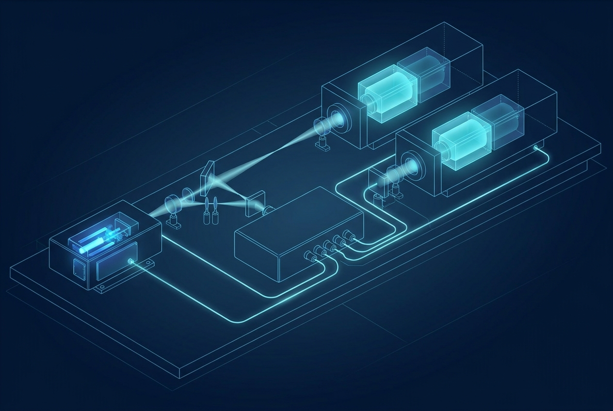
A Pockels cell is a fast optical switch with no moving parts. It is a crystal that becomes birefringent in proportion to an applied electric field, the linear electro-optic effect. Put the crystal between polarizers and the applied voltage rotates the polarization, so the optical path turns from blocking to transmitting and back. The switching is as fast as the electric field can be raised and lowered, which is nanoseconds, far faster than any mechanical shutter or acousto-optic device.
The cell itself is passive. What makes it useful is the high-voltage driver that swings it, and what makes the driver useful is precise timing. A Pockels cell needs hundreds of volts to several kilovolts to reach its half-wave voltage, the voltage that produces a full polarization swing. The driver delivers that swing as a very fast pulse, with edges in the single-nanosecond range, and because the crystal is a small capacitance the driver pushes a large, brief current spike to move the voltage that fast. The delay generator is the conductor. It accepts a reference, most often a photodiode pulse that marks a laser pulse, then issues a precisely delayed trigger that tells the driver exactly when to open and close the optical gate. Three things hang on that timing. The open instant decides which pulse you select. The open duration, set by two edges, decides whether you pass one pulse or a window of pulses. The shot-to-shot stability of the open instant, the jitter, decides how clean the extracted pulse is.
Three jobs sit on top of this switch. Cavity dumping holds energy inside a resonator with high-reflectivity mirrors, lets it build, then switches the cell to couple all of it out in one short burst whose length is set by the cavity round-trip time rather than by the gain dynamics. Pulse picking takes a high-repetition-rate train, say tens of megahertz from a mode-locked oscillator, and selects single pulses or short bursts at a lower rate. There the resolution and jitter both have to be small compared to the pulse spacing, because missing the window picks the wrong pulse or clips two. Regenerative amplification traps a seed pulse for many gain passes and switches it out at peak energy, often with the same cell doing both the trap-in and the switch-out on two precisely timed edges.
The timing tolerances here are tight. For a regenerative amplifier or a cavity dumper the cell has to open at the exact peak of a circulating field that lives for only a few nanoseconds per round trip, so this is low-jitter, fine-resolution work. A fast, high-resolution channel suits it well, which is where the Model 765 (800 MHz, 10 ps resolution, fast rise) lives. For the high-voltage drive itself, BNC offers a high-voltage variant, the 765-HV. What it delivers electrically should be read from the current datasheet rather than assumed here.
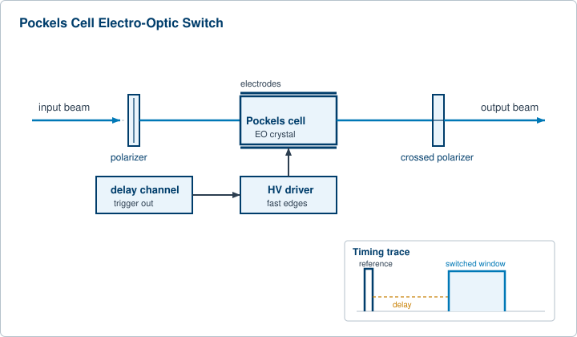
Q-switching is how a laser turns a long, gentle pump into a single giant pulse. The "Q" is the cavity quality factor. Hold Q low and the cavity will not lase, so the gain medium stores energy as the pump dumps it in. Then suddenly raise Q and the stored energy collapses into one short, intense pulse, nanoseconds long and orders of magnitude above the average power.
Active Q-switching uses a controlled switch, often the Pockels cell above or an acousto-optic modulator, and the switch timing is the whole game. The sequence runs off a delay generator. One channel fires the pump, typically a flash lamp. A second channel, after a delay, opens the Q-switch. That flash-lamp-to-Q-switch delay is set to the moment of maximum stored inversion, which for a common solid-state gain medium lands in the low hundreds of microseconds after the lamp fires, an illustrative window of roughly 120 to 200 microseconds tuned for peak output energy. Set the delay too early and the medium has not finished storing energy, so the pulse is weak. Set it too late and spontaneous emission has bled the inversion away, so again the pulse is weak. There is a sharp optimum, and the delay generator is what lets the user find it and hold it.
Two further timing facts matter to the buyer. After the switch opens there is a pulse build-up time, the brief interval while the circulating field grows from noise to full pulse, and that build-up itself jitters by tens of nanoseconds because it starts from spontaneous emission. Any downstream device that must catch the actual optical output, a camera gate or a second laser, therefore needs a clean optical sync, usually a photodiode watching the real pulse, rather than trusting the electrical Q-switch trigger alone. A good architecture provides both: the delay generator sequences the lamp and switch, and a fast detector re-references everything downstream to photon arrival. The second fact is the friendly one. The energy in the pulse is a smooth function of the lamp-to-switch delay, so sweeping that one delay gives a clean energy control knob with no change to the optics. A six-channel portable instrument such as the Model 525 (4 ns resolution, low internal jitter) handles the lamp and switch with channels to spare for diagnostics.
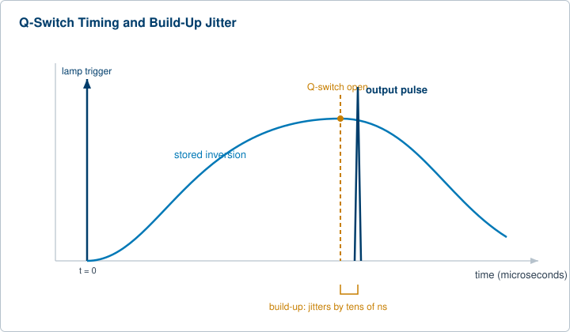
Most pulsed laser work, whatever the application on top, reduces to coordinating a handful of timed events. The pump has to fire. The switch has to open at the inversion peak. In an oscillator-amplifier chain, each amplifier stage has to be pumped so its gain peaks exactly when the pulse arrives, which means a cascade of delays referenced to one master trigger. When a small, stable oscillator seeds a larger amplifier, the seed injection has to be timed to the amplifier's gain window, and the timing jitter between seed and pump sets the amplitude stability of every output pulse.
The hardware split drives the tolerances. A flash-lamp-pumped system, common in Nd:YAG lasers, has a slow, energetic, somewhat jittery pump, so its delays live in the microsecond regime and its main enemy is shot-to-shot energy drift. A diode-pumped system has a faster, more stable, more repeatable pump, which tightens the achievable jitter and lets the whole chain run at higher repetition rate. In both, the delay generator is the single reference the entire bench hangs off. Buyers care about three numbers: the delay resolution, because it sets how finely they can tune each stage; the channel-to-channel jitter, because it sets how reproducible the combined output is; and the channel count, because a real chain wants one channel per pumped stage plus spares for diagnostics.
This is where the jitter budget gets explicit. For a flash-lamp chain the bench-class Model 577 (250 ps resolution, low channel-to-channel jitter) is a natural fit. For seeding and oscillator work where the residual jitter between seed and pump becomes the limiting number, the femtosecond-class Model 745T family closes the budget. The choice is not about raw speed. It is about matching the instrument's jitter to the tolerance the physics imposes on the weakest link in the chain.
A camera only sees what is happening during its exposure. For events that last nanoseconds, the exposure has to be a nanosecond-scale window placed precisely on the event, and that placement is a delay generator's job.
An intensified CCD, an ICCD, puts an image intensifier in front of the sensor and gates the intensifier on for a chosen window. Modern gated intensifiers reach sub-nanosecond gate widths with delay steps in the tens of picoseconds, figures to treat as illustrative. The delay generator fires the light source, the laser or the spark, then opens the camera gate after a delay tuned to when the light of interest arrives, and holds it open just long enough to catch the signal while rejecting everything before and after. In a combustion or plasma diagnostic this is what lets the camera capture faint fluorescence while rejecting the bright excitation flash.
A framing camera takes a short burst of full images at a very high frame rate to make a movie of a one-shot event. A streak camera does something different. It sweeps the image across the sensor at a known rate, trading one spatial axis for a time axis, so a single slit view becomes a continuous record of intensity versus time with picosecond resolution. Both depend on a trigger that arrives at exactly the right instant. The streak camera is the demanding case, because its time resolution is set jointly by the optical pulse width and the sweep trigger jitter. A public rule of thumb makes the point: a 2 ps intrinsic resolution combined with 10 ps of trigger jitter yields about 11 ps of effective resolution, so the trigger jitter, not the optics, can dominate. That is why these systems are bought alongside a low-jitter timing source, and why the source is often re-referenced to a photodiode watching the real light pulse. For the tightest gating work the Model 745T family carries the jitter; for multi-camera setups the channel count of the instrument decides how many views fire from one reference.
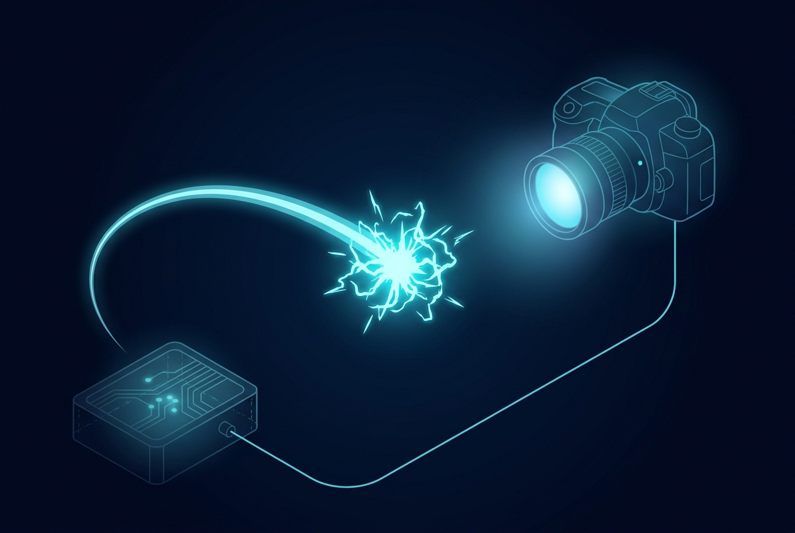
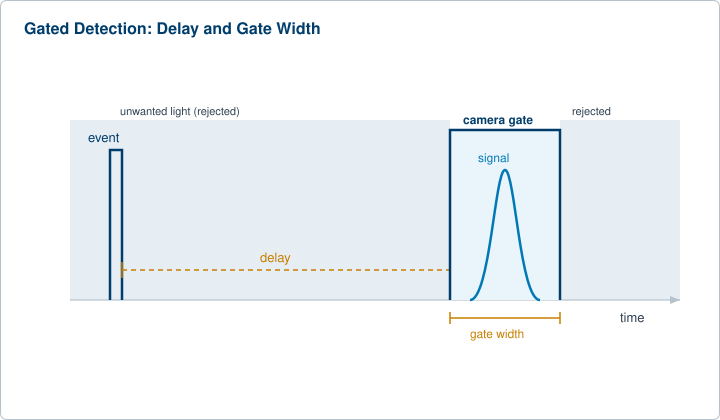
Time-resolved science watches fast processes by taking snapshots. A first "pump" pulse starts something, for example it excites a molecule or launches a reaction, and a second "probe" pulse interrogates the state a controlled time later. Step the pump-probe delay across a range and you film the process frame by frame in time.
There are two ways to set that delay, and the choice defines the timing requirement. An optical delay line moves a mirror to change a path length, where about 0.3 m of path is 1 ns, so it gives extremely fine, jitter-free steps but a limited range and a moving part. Electronic delay, from a delay generator, gives a huge range and no moving parts, at the cost of jitter set by the electronics. Many experiments use both: a generator for the coarse, wide-range delay, and an optical stage for the fine sweep. When two independent lasers must be synchronized rather than split from one, the delay generator coordinates their triggers and the residual jitter between them becomes the experiment's time resolution.
The same architecture underlies a family of named methods. Time-resolved spectroscopy reads an absorption or emission spectrum at each delay. Laser-induced fluorescence, LIF, excites a species and gates the detector to its fluorescence window while rejecting the excitation flash. Planar LIF, PLIF, does this across a light sheet to image a whole plane of a flame or plasma. Particle image velocimetry, PIV, fires two closely spaced light sheets and captures two frames to extract a velocity field from the particle displacement. PIV is a pure timing problem: the two pulses are separated by a short, precisely known interval, often hundreds of nanoseconds, and the camera's two exposures have to bracket them exactly. The buying reason is the same every time. The science lives in the delay axis, so the instrument that owns the delay axis has to be fine, stable, and multi-channel.
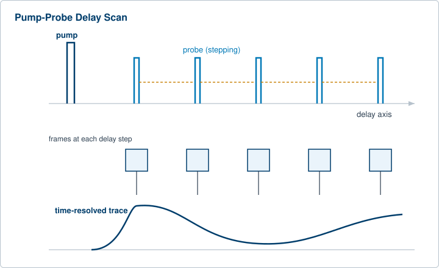
Time-of-flight is the simplest precision-timing application to state and one of the most demanding to do well. Fire a pulse, measure how long until the echo returns, multiply by the speed of light, halve it, and you have range. Light travels about 0.3 m per nanosecond round trip, so 1 ns of timing error is about 15 cm of range error. The timing is the measurement.
A delay generator earns its place two ways. It triggers the outgoing laser pulse on one channel and provides a delayed gate to the detector and digitizer on another, so the receiver only listens during the window where echoes from the range of interest can arrive. That range gating rejects backscatter from fog, near-field clutter, and the transmit flash, and it lets the system spend its dynamic range on the slice it cares about. Sweep the gate delay and you scan range slices. In single-photon LIDAR the detector is a single-photon avalanche diode whose gate has to open in a narrow window referenced to the laser pulse, and the system builds a time-of-flight histogram over many shots, so both the laser trigger and the detector gate need low jitter and fine resolution to keep the histogram sharp. The four buying reasons distill cleanly here: resolution sets range precision, jitter sets range repeatability, multi-channel coordination lets one box run the laser and the gate together, and edge selection lets the user pick exactly which return to time on.
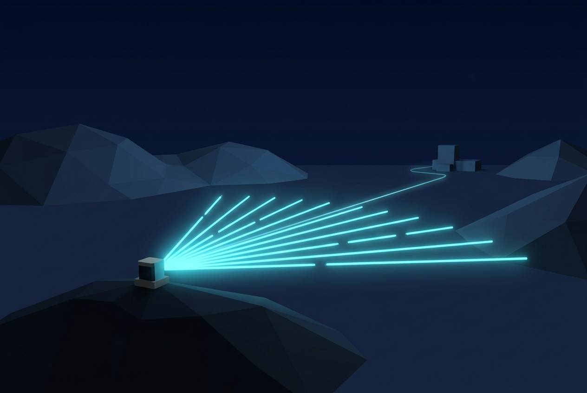
A time-of-flight mass spectrometer separates ions by how long they take to fly down a drift tube. Give every ion the same kinetic energy and the lighter ones arrive first, so flight time maps to mass. The resolution of the instrument is set by how tightly the start time of the flight is defined, which makes this a timing instrument with a chemistry front end.
Two timed events define the measurement. First the ions are created, often by a short laser pulse onto a sample. Then a high-voltage extraction pulse accelerates them into the drift tube and starts the clock. The trick that made the technique high-resolution is delayed extraction. Instead of pulsing the field on at the instant of ionization, the system waits a controlled few hundred nanoseconds to a few microseconds, lets the freshly made ion cloud settle and spread in a predictable way, then fires the extraction pulse so that ions of the same mass but slightly different starting positions and velocities arrive at the detector at the same time. That delay is set on a delay generator, and the extraction pulse is a fast high-voltage edge whose timing relative to the ionization laser directly sets the resolving power. Get the delay wrong and peaks broaden and masses overlap. The buying reason is delay resolution and stability between two channels, the ionization trigger and the extraction pulse, plus the ability to trigger or drive a fast high-voltage switch. Where that fast HV edge is needed, the 765-HV variant is worth a look; the specifics belong on the datasheet.
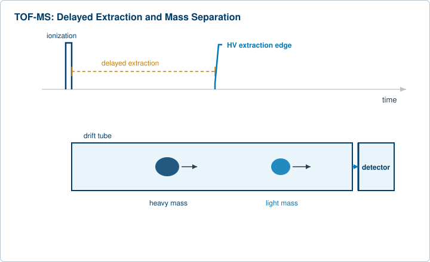
An accelerator is a large machine in which many subsystems have to fire in a fixed sequence locked to the beam. The gun launches particles. Injection and extraction kicker magnets pulse on to steer the beam into or out of a ring at the exact moment a bunch is in the right place. RF cavities, diagnostics, and downstream experiments all need triggers referenced to the same beam clock. Facilities usually run an event-based timing system that broadcasts codes to receivers across the installation, and each receiver generates locally delayed triggers for its subsystem.
A delay generator does the local job: take the machine trigger, apply a calibrated delay and width, and fire one subsystem. Kicker timing is the unforgiving case. A kicker has to be at full field while the bunch passes and off before the next, and a bunch crossing is short, so the trigger jitter has to sit in the tens of picoseconds. Public timing-system requirements for injection synchronization commonly cite jitter in the few-tens-of-picoseconds range, with general-purpose delay generators in a looser class for less critical channels. Treat both as illustrative. The buying reasons are low jitter for the critical pulsed magnets, many independent channels because there are many subsystems, and clean external triggering so each box locks to the machine clock. The high channel count of the Model 588B (12 or 24 channels, very low jitter) suits an installation that needs to drive many subsystems from one rack-mounted reference.
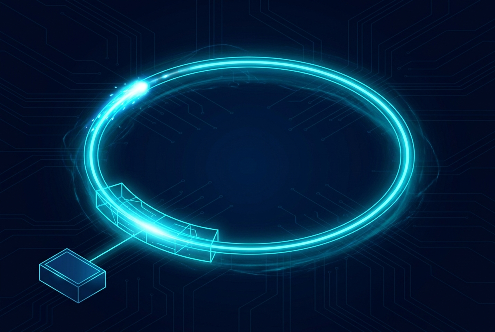
Quantum optics lives or dies on coincidence timing. Photon pair sources, quantum key distribution, and quantum imaging all ask the same question: did these two detector clicks happen at the same time, within a narrow window. Answering it means gating single-photon detectors precisely and time-stamping their clicks against a common reference.
A single-photon avalanche diode, a SPAD, is usually run gated, biased above breakdown only during a brief window when a photon is expected, which suppresses dark counts and afterpulsing. A delay generator sets that gate to coincide with the expected photon arrival, shifted by a precisely known delay from the pump pulse that created the pair. Scanning the gate delay maps out the detector's response and the photon arrival distribution. In a pair experiment the signal and idler detectors are gated and their coincidences are counted in narrow time bins, so the narrower and more stable the timing, the cleaner the coincidence signal and the lower the accidental background. The buying reasons here are the tightest in the chapter: very low jitter, very fine delay resolution, and tight multi-channel alignment, because the whole measurement is the overlap of timing windows. The femtosecond-class Model 745T family is built for exactly this kind of work.
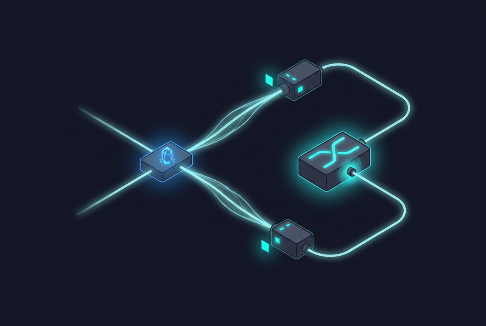
Detonics studies events that happen once, fast, and destructively. A detonation front moves through an explosive in microseconds, and understanding it means firing detonators, illumination, and cameras in a tightly sequenced, repeatable order, then capturing the event before it consumes itself. Two demands stack. The fireset side may need several detonator channels to fire either simultaneously, to launch a clean planar front, or in a programmed staggered sequence, so channel-to-channel skew and jitter become a physics parameter. The diagnostic side needs framing and streak cameras and any illumination triggered at the right instant, often with the cameras' own internal timing nested inside the generator's coarse sequence. The buying reasons are multi-channel coordination with low inter-channel skew, low jitter so the single shot lands where the diagnostics are looking, and enough channels to drive the firing set and the camera suite from one reference.
A cluster of industrial and test applications share the same pattern without the exotic physics. In ultrasonics and nondestructive testing, a pulse is launched into a part and echoes from flaws or boundaries are timed and gated, the acoustic cousin of LIDAR. The generator fires the transmit pulse and gates the receiver to the depth window of interest. In automated test equipment, the generator sequences a device under test through timed stimulus and measurement steps, and software updates the delays inside a timed loop to walk through a test profile. Here the value is programmability and repeatable, calibrated timing across many cycles rather than raw speed. In radar target simulation, the system returns a delayed copy of a received radar pulse to mimic the round-trip time to a target at a chosen range, so the delay corresponds directly to simulated distance and sweeping it makes the target appear to move. In fiber and photonics testing, generators trigger sources and gate detectors for time-domain measurements and coordinate pulsed components on an optical bench.
Across all of these the buying reasons collapse to the same list that opened the chapter: calibrated delay resolution, low jitter, multiple coordinated channels, and flexible triggering and gating. One reference fans out to a lamp, a switch, a camera, and a digitizer, each on its own channel with its own delay and width. Whether the field is electro-optics, mass spectrometry, accelerator physics, or quantum optics, the picture underneath is the same, and the instrument that draws it is the digital delay generator.
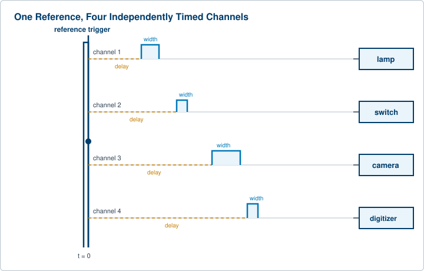
Check your understanding. Five quick questions on electro-optic switching, Q-switch timing, camera gating, pump-probe delay, and TOF-MS delayed extraction.